BGL, Not Your Basic Bagel
My Role:
The Brief
Create a modern bagel bar where customers can build their own combinations from a wide range of spreads, fillings, and toppings. The challenge was to create a brand that feels contemporary and playful while standing apart from the typical Western visual language associated with bagel cafés.
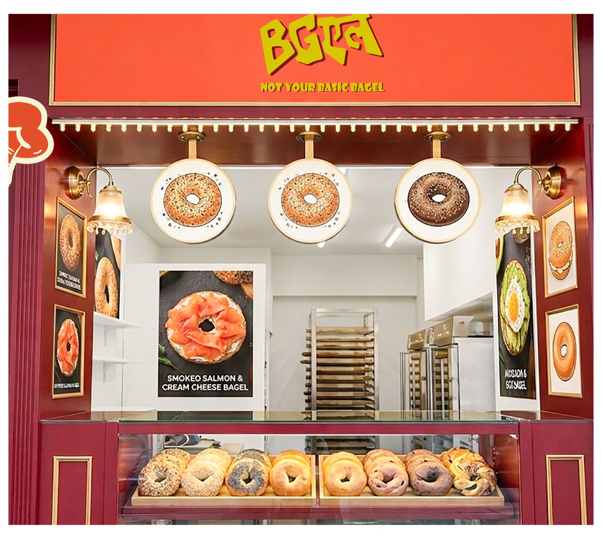
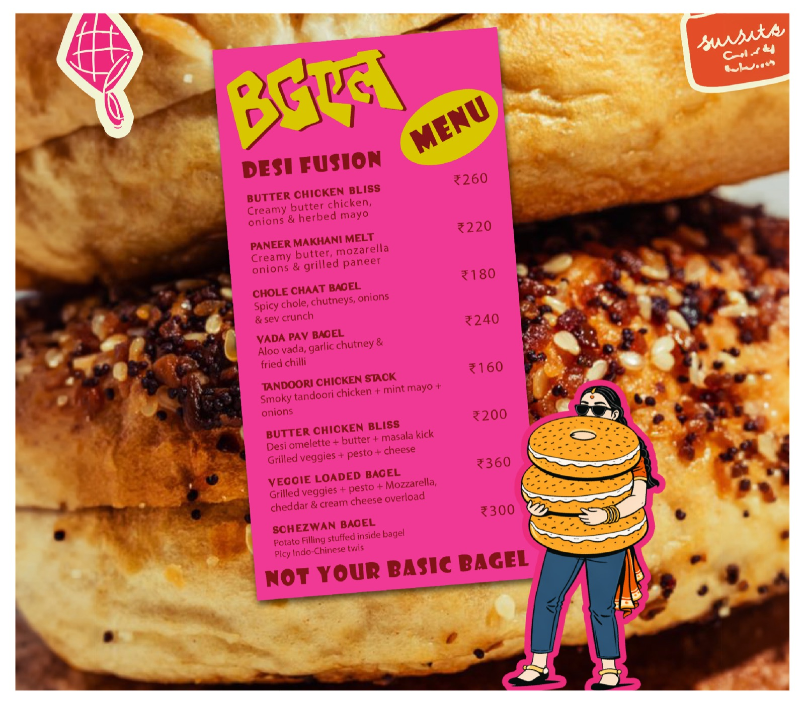
The Process
BGL began with one question: what would a modern bagel bar look like with an Indian point of view? The identity brings together Western bagel culture and Indian visual language, the “BG” uses a bold Latin typeface, while the “L” is created in Devanagari, creating an unexpected mix of scripts within the same wordmark.
The brand extends this cultural crossover through its illustrated character, a woman styled in a contemporary way, combining a saree drape with jeans, creating a visual representation of both worlds coming together.
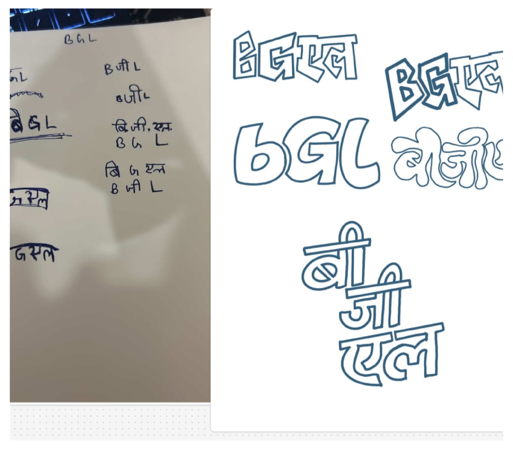
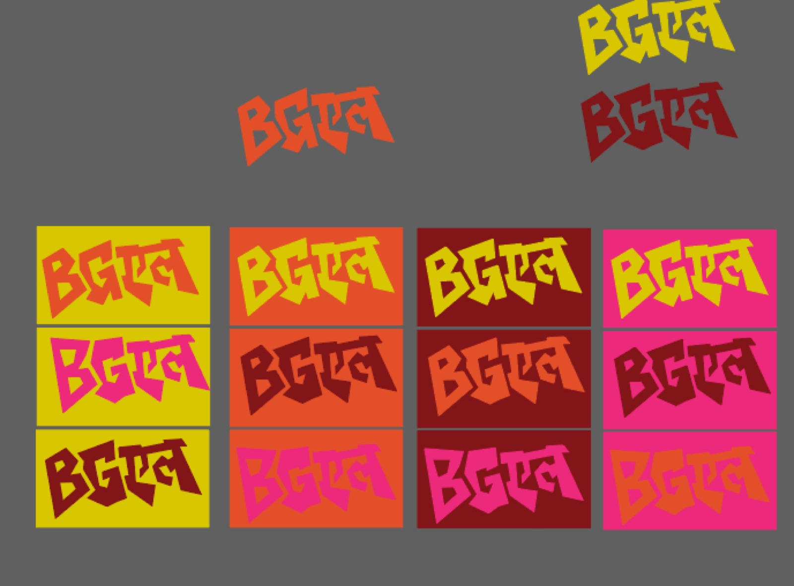
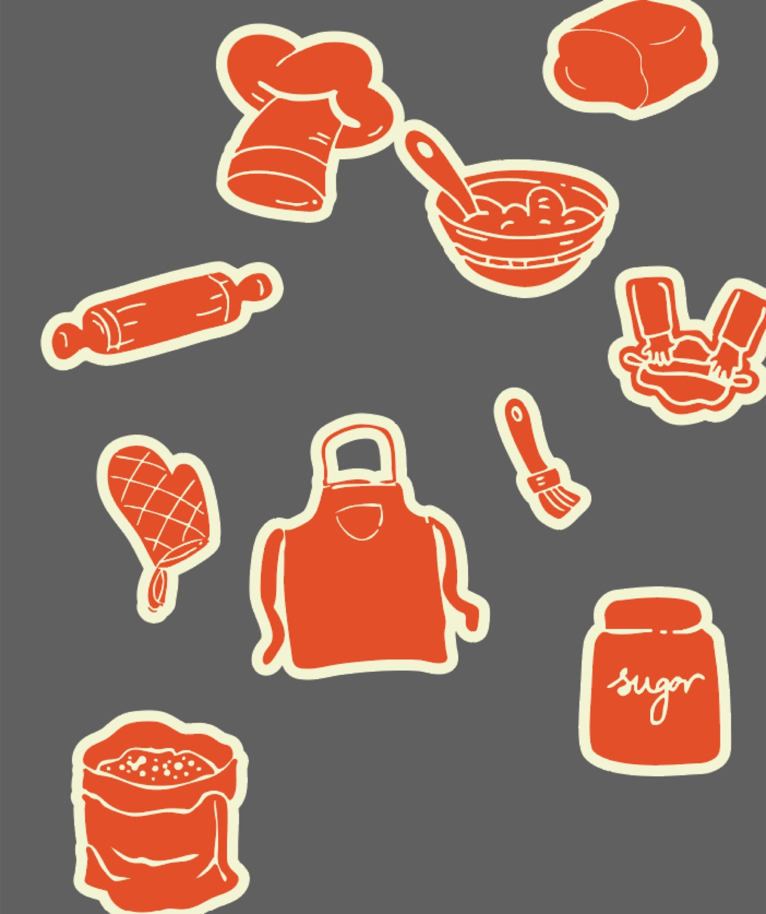
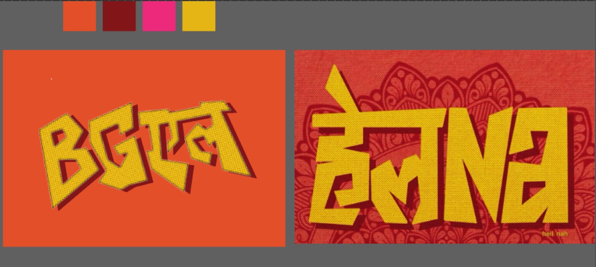
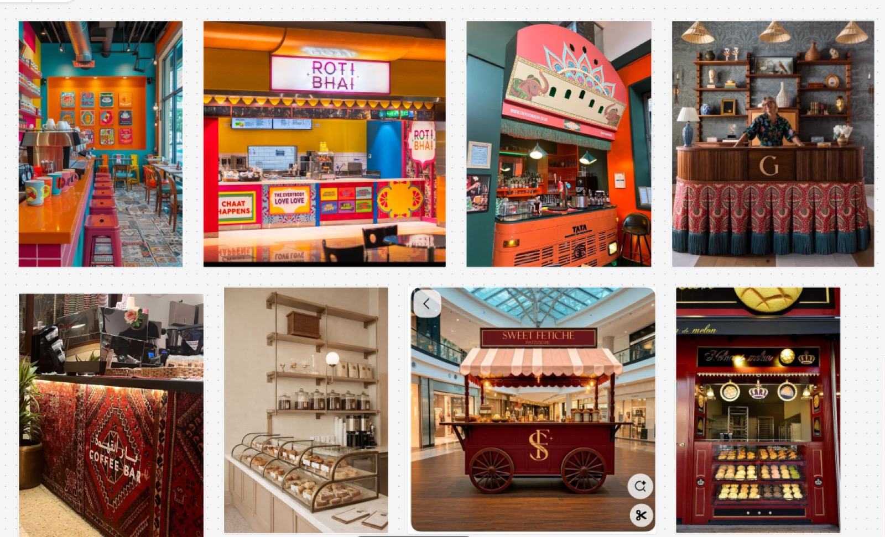
Logo Concept
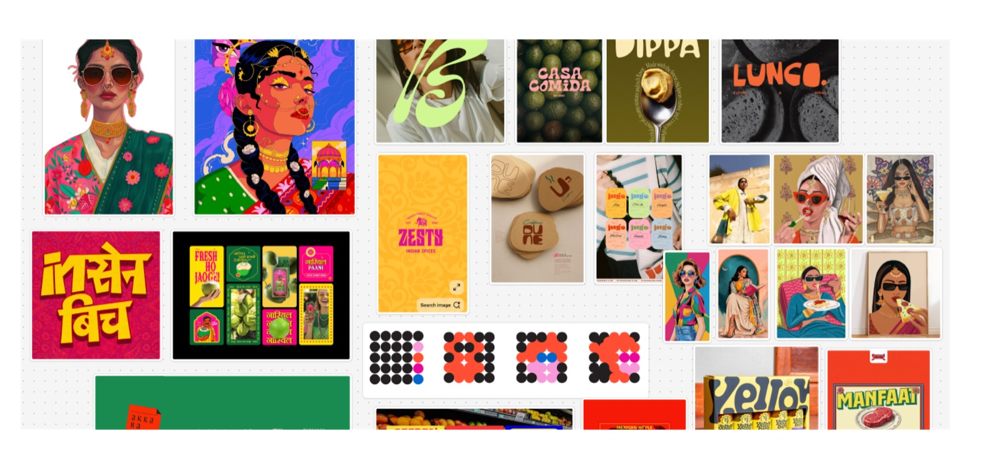
Reference Board
Bringing The Brand To Life
I extended the identity across packaging, menus, storefront applications, social media, and branded touchpoints, using the same graphic language to create a cohesive and energetic bagel-bar experience.
The illustrations became an important part of the identity, helping the brand feel more approachable, expressive, and memorable.
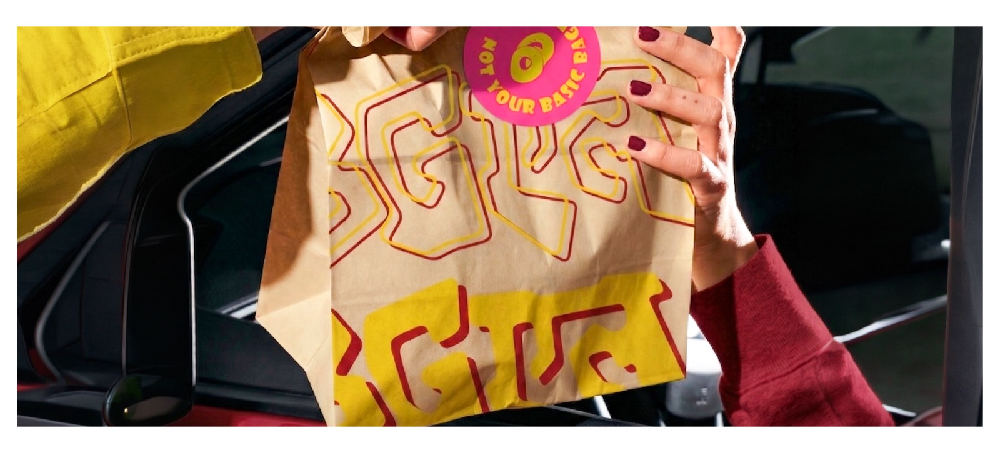
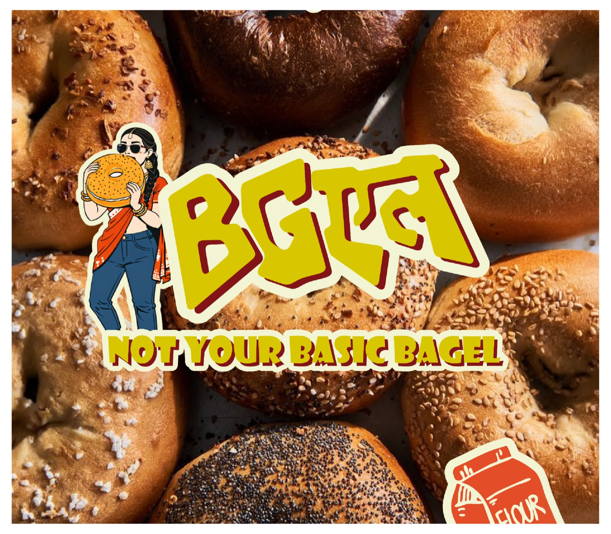
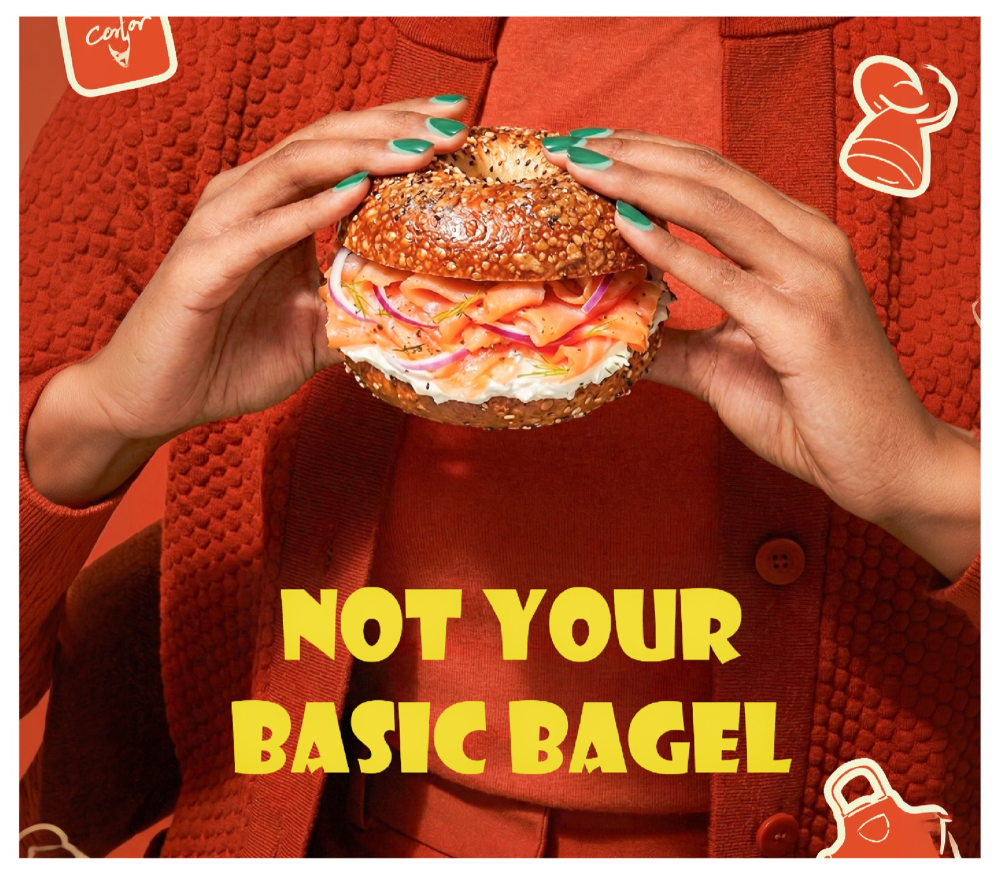
What I Learned
This project taught me how cultural references can be integrated into a contemporary identity without making the brand feel stereotypically traditional. The strongest part of the concept came from finding a visual middle ground between two seemingly different worlds, and making that contrast feel intentional.